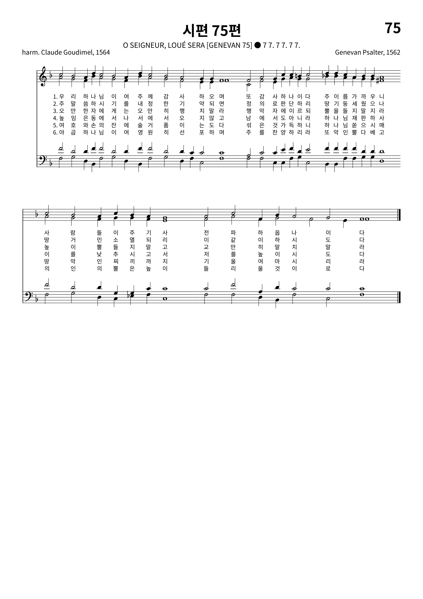

Psalm 75
O SEIGNEUR, LOUÉ SERA [GENEVAN 75] · 7 7. 7 7. 7 7.
English title: Thee, O God, Yes, Thee We Praise
Tune: Genevan Psalter, 1562 · Harmony: Claude Goudimel, 1564 · Lyrics: Korean adaptation of Psalm 75 from the Korean Revised Version (AI draft adaptation · not yet theologically reviewed) · 6 stanzas
Score PDF MusicXML (for printing) MusicXML (for accompaniment, with prelude and repeats) Read Psalm 75 (Korean Revised Version)
Score
← Psalm 74B ListAccompaniment (in preparation)Psalm 76 →
Lyrics (Korean)
Stanza 1 (Ps. 1)
우리 하나님이여
주께 감사하오며
또 감사하나이다
주 이름 가까우니
사람들이 주 기사
전파하옵나이다
우리 하나님이여
주께 감사하오며
또 감사하나이다
주 이름 가까우니
사람들이 주 기사
전파하옵나이다
Stanza 2 (Ps. 2-3)
주 말씀하시기를
내 정한 기약 되면
정의로 판단하리
땅 기둥 세웠으나
땅 거민 소멸되리
이같이 하시도다
주 말씀하시기를
내 정한 기약 되면
정의로 판단하리
땅 기둥 세웠으나
땅 거민 소멸되리
이같이 하시도다
Stanza 3 (Ps. 4-5)
오만한 자에게는
오만히 행치 말라
행악자에 이르되
뿔을 들지 말지라
높이 뿔 들지 말고
교만히 말치 말라
오만한 자에게는
오만히 행치 말라
행악자에 이르되
뿔을 들지 말지라
높이 뿔 들지 말고
교만히 말치 말라
Stanza 4 (Ps. 6-7)
높임은 동에서나
서에서 오지 않고
남에서도 아니라
하나님 재판하사
이를 낮추시고서
저를 높이시도다
높임은 동에서나
서에서 오지 않고
남에서도 아니라
하나님 재판하사
이를 낮추시고서
저를 높이시도다
Stanza 5 (Ps. 8)
여호와 손의 잔에
술 거품 이는도다
섞은 것 가득하니
하나님 쏟으시매
땅 악인 찌끼까지
기울여 마시리라
여호와 손의 잔에
술 거품 이는도다
섞은 것 가득하니
하나님 쏟으시매
땅 악인 찌끼까지
기울여 마시리라
Stanza 6 (Ps. 9-10)
야곱 하나님이여
영원히 선포하며
주를 찬양하리라
또 악인 뿔 다 베고
의인의 뿔은 높이
들리울 것이로다
야곱 하나님이여
영원히 선포하며
주를 찬양하리라
또 악인 뿔 다 베고
의인의 뿔은 높이
들리울 것이로다